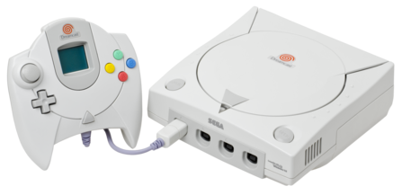
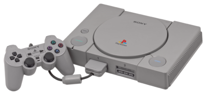
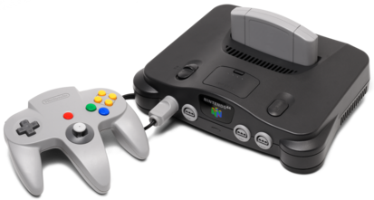
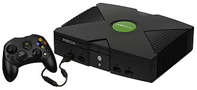

Dreamcast

O Dreamcast (ドリームキャスト Dorīmukyasuto?) é um console de jogos eletrônicos lançado pela Sega em 27 de novembro de 1998 no Japão, 9 de setembro de 1999 na América do Norte e 14 de outubro de 1999 na Europa. Foi o primeiro da sexta geração de consoles, precedendo o PlayStation 2 da Sony, o GameCube da Nintendo e o Xbox da Microsoft. O Dreamcast foi o último console doméstico da Sega, marcando o fim dos 18 anos da empresa no mercado de consoles.
Ps1

O PlayStation (プレイステーション Pureisutēshon?, oficialmente abreviado PS, comumente chamado de PlayStation 1 ou PS1) foi o primeiro console de vídeo game fabricado pela Sony, lançado em 3 de dezembro de 1994 no Japão, 9 de setembro de 1995 nos Estados Unidos e em 29 de setembro de 1995 na Europa.
Nintendo 64

Nintendo 64 (com a grafia estilizada NINTENDO64, e abreviação N64), foi um console de videogame da quinta geração lançado pela empresa japonesa Nintendo, em 23 de junho de 1996 no Japão. Lançado como um console com gráficos de 64 bi
Xbox classico

O Xbox é um console de vídeo game produzido pela Microsoft. Foi lançado em 15 de novembro de 2001 na América do Norte, 22 de fevereiro de 2002 no Japão, e 14 de Março de 2002 na Austrália e Europa. Foi a primeira incursão da Microsoft no mercado de vídeo games. Como parte da sexta-geração de jogos, o Xbox competiu com Sony PlayStation 2, Sega Dreamcast (que parou as vendas americanas antes que o Xbox fosse colocado à venda) e o Nintendo GameCube. O Xbox foi o primeiro console oferecido por uma empresa norte-americana após o Atari Jaguar parar as vendas em 1996. O nome Xbox foi derivado a partir de uma contração da caixa "DirectX Box", uma referência a Microsoft.[4]
Fonte : wikipedia